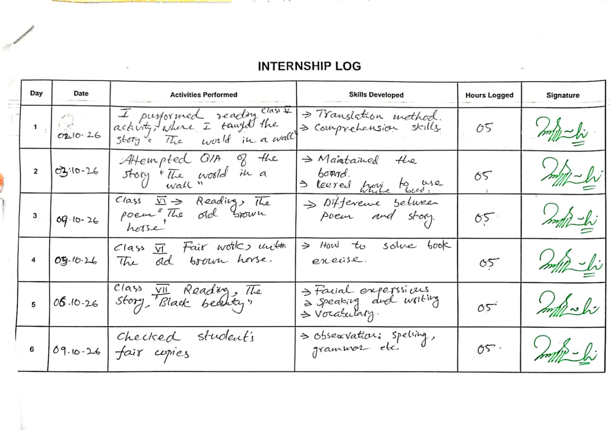
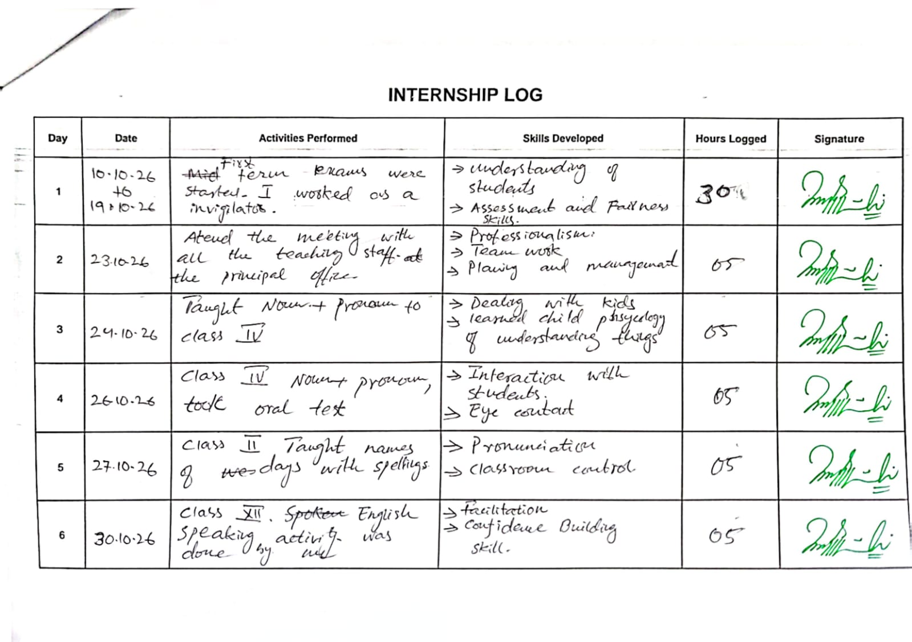
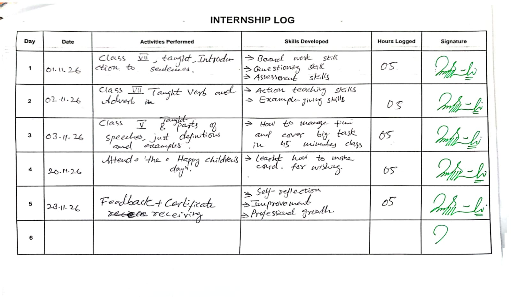
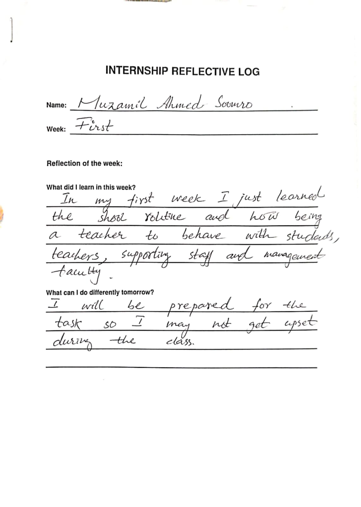
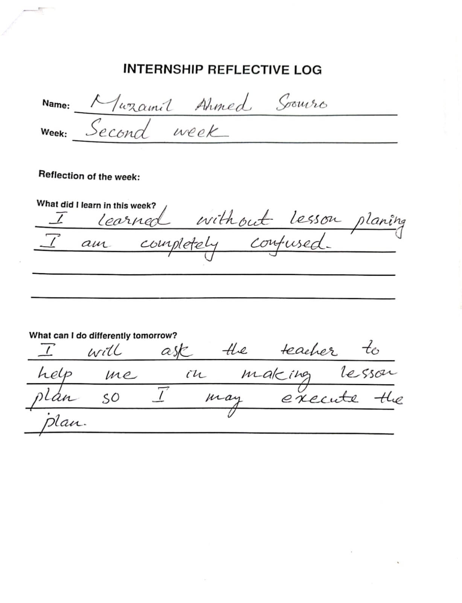
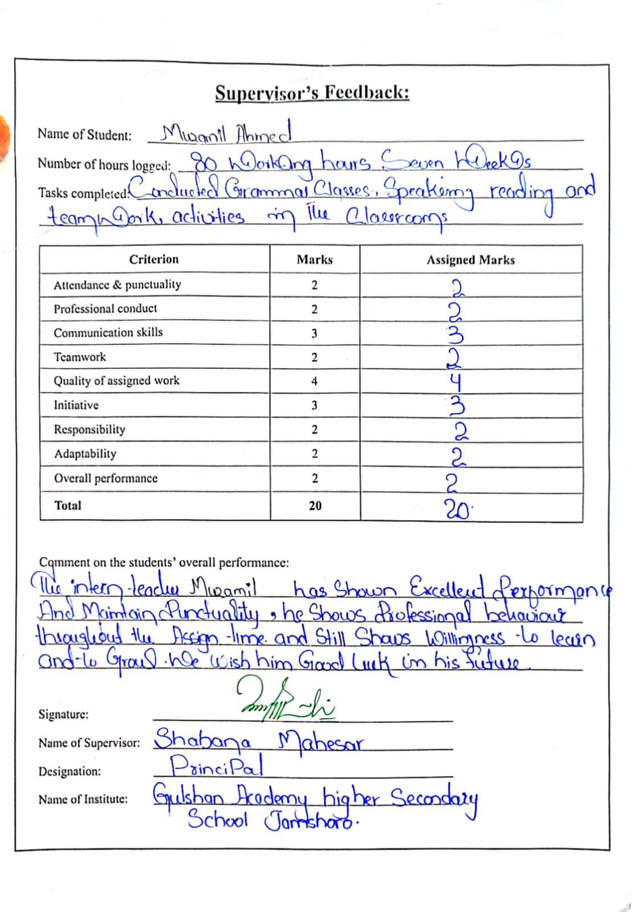

My Profile
My name is Muzamil Soomro, and I am a student of BS English Language and Literature. I have a strong interest in English literature, education, and teaching. As an aspiring educator, I believe that teaching is not merely the process of delivering knowledge but also an opportunity to inspire students, develop their abilities, and encourage critical thinking.
Throughout my academic journey, I have developed an interest in English language teaching, communication, reading, and writing. My teaching internship provided me with an opportunity to connect theoretical knowledge with practical classroom experience. It also helped me understand the responsibilities of a teacher, classroom management, lesson planning, student assessment, and effective teaching strategies.
I consider myself a motivated and responsible learner who is always willing to acquire new knowledge, improve professional skills, and face new challenges.
Internship Placement Details
About the school
Gulshan Academy is a higher secondary school in Jamshoro that serves students from middle school through intermediate level. During the placement I observed experienced teachers, assisted with English classes, and gradually took over full lessons under supervision.
Placement Overview :
I was placed at Gulshan Academy Higher Secondary School, Jamshoro Phase 2, to complete my teaching internship as part of my BS English Literature academic program. During this internship, I had the opportunity to gain practical teaching experience in a real classroom environment. My placement focused primarily on English language teaching, classroom activities, lesson delivery, student engagement, and assessment. This placement provided me with an opportunity to apply my academic knowledge, develop teaching skills, and understand the professional responsibilities of an educator.
Internship Objectives
The main objective of my teaching internship was to transform my academic knowledge into practical teaching experience and develop my identity as a confident, reflective, and responsible educator.Specific Objectives:
1. Bridging Theory and Practice:
To transform classroom knowledge into meaningful teaching experiences.2. Effective Communication:
To make English learning clear, engaging, and accessible to students.3. Creative Teaching:
To explore innovative ways of teaching grammar, reading, writing, and language skills.4. Understanding Learners:
To recognize individual learning differences and respond to students' needs.5. Classroom Leadership:
To develop the ability to guide students and create a productive learning environment.6. Reflective Practice:
To evaluate my teaching methods, identify weaknesses, and continuously improve.7. Student Development:
To encourage independent thinking, confidence, creativity, and active participation.8. Professional Growth:
To develop the knowledge, discipline, and confidence required for a future teaching career.
Internship Logbook



Reflective Journal


Supervisor Evaluation

Supervisor's feedback
Internship Achievements
Add Appreciation Certificate photo
Add Completion Certificate photo
Add Principal Appreciation photo
Add Principal Completion photo
Activities of Internship
Add Present Perfect Tense photo
Add Paragraph Writing photo
Add Student Feedback photo
Add Answering Queries photo
Internship Report
INTERNSHIP REPORT
Teaching Internship at Gulshan Academy Higher Secondary School, Jamshoro Phase 2
1. Introduction
A teaching internship is an essential part of professional education because it provides students with an opportunity to connect theoretical knowledge with practical experience. As a BS English Literature student, I completed my teaching internship at Gulshan Academy Higher Secondary School, Jamshoro Phase 2. The primary purpose of this internship was to understand the practical responsibilities of a teacher, develop effective teaching skills, and gain firsthand experience of the classroom environment.
This internship allowed me to explore different teaching methods, interact with students, prepare and deliver lessons, and understand the importance of effective communication in education. It was a valuable learning experience that contributed to my academic and professional development.
2. Internship Placement and Learning Environment
My internship placement was at Gulshan Academy Higher Secondary School, located in Jamshoro Phase 2. During my placement, I became familiar with the school's educational environment, classroom activities, teaching practices, and students' learning needs.
The school provided me with an opportunity to observe and participate in teaching activities. I learned that a successful learning environment requires cooperation between teachers and students, proper classroom management, effective communication, and the appropriate use of teaching strategies.
My experience at the institution helped me understand that teaching is not limited to explaining textbook content; it also involves motivating students, developing their confidence, and encouraging active participation.
3. Teaching Responsibilities and Classroom Activities
During my internship, I participated in various English language teaching activities. My primary responsibilities included explaining grammatical concepts, conducting classroom exercises, guiding students in reading and writing, and helping them improve their language skills.
Some of major topics and activities I covered included:
- Taught story “The world in a wall”: Where I performed reading activity, explained about the story where I told student about the writer, how he describes an ancient crumbling wall where lot of animals live. Furthermore, I attempted question and answers of the story on board.
- Taught the poem “The old brown horse”: I explained student about the poem and difference between poem and the story. Moreover, I told them the short summary of the poem where I explained them about the main theme of the poem.
- Taught the story “Black beauty”: I read the story and translated to students. I discussed about the characters in the story and their dialogues how they were speaking to each other. Moreover, I told them the main them of the story.
- Worked as invigilator: Where I learnt how to control the class filled with more than 40 students. And also I guided the week student to manage their stress during the exams.
- Attempted meeting: I attempted meeting with teaching staff at the principal office where I learn professionalism, team work, planning and management.
- Introduction to sentences: I taught student about the sentences where I give them definition of sentences, taught three essential rules of sentence and its types.
- Verb and Adverb: I taught students about the verb and adverb where I explained about verb its types and Adverb and its types. And did activity where sentences were built by the student.
- Punctuation marks: I taught students about the basic five punctuation marks (.), (,), (?), (‘) and (!). First I gave them explanation of each punctuation mark with examples.
- World children’s day: I participate in the children day activity where for the first time I learnt how to make cards also join the stage with other teaching faculty to give message.
4. Teaching Methods and Classroom Experience
Throughout my internship, I used different teaching approaches according to the topics and students' learning levels. I focused on explanation, examples, questioning, classroom discussion, written exercises, and individual participation.
For grammar lessons, I explained rules and structures before providing practical examples. I encouraged students to construct their own sentences to check their understanding. Similarly, during paragraph and summary writing activities, I focused on helping students understand the organization of ideas and the importance of clear expression.
One important lesson I learned was that students do not always learn at the same pace. Some understand concepts quickly, while others require additional explanation and practice. Therefore, a teacher must be patient, flexible, and attentive to individual learning needs.
5. Professional Skills and Development
This internship contributed significantly to my professional development. Before entering the classroom as an intern teacher, most of my knowledge was based on academic learning. However, practical teaching allowed me to understand how educational concepts are applied in real situations.
I developed several important skills, including:
- Communication Skills: Improving the ability to explain concepts and communicate with students.
- Classroom Management: Understanding how to maintain discipline and encourage participation.
- Lesson Delivery: Learning how to organize and present educational content effectively.
- Time Management: Managing classroom activities within the available time.
- Assessment Skills: Understanding how to evaluate students through exercises, questions, and written activities.
- Professional Responsibility: Learning the importance of punctuality, preparation, cooperation, and discipline.
I also developed greater confidence in presenting lessons and interacting with students.
6. Challenges and Learning Experiences
Like every practical learning experience, my internship involved certain challenges. One of the important challenges was addressing students with different levels of understanding and learning abilities. Some students required repeated explanations and additional examples to understand grammatical concepts.
Another challenge was maintaining students' attention and encouraging active participation during classroom activities. I learned that simply explaining a topic is not always sufficient; teachers must involve students through questions, examples, and practical exercises.
I tried to address these challenges by simplifying explanations, providing relevant examples, encouraging students to participate, and giving them opportunities to practise what they learned.
These experiences taught me that effective teaching requires patience, preparation, creativity, and continuous improvement.
7. Achievements and Learning Outcomes
During my internship, I had the opportunity to teach different English language topics, conduct writing and translation activities, participate in examination duties, and maintain teaching records.
Some of my significant achievements included developing confidence in lesson delivery, gaining practical experience in teaching grammar, guiding students in paragraph and summary writing, and understanding classroom assessment procedures.
I also maintained my internship documentation, including teaching activity reports, reflective journals, and records of my professional experiences. These documents helped me evaluate my progress and identify areas requiring further improvement.
8. Overall Reflection
Reflecting on my internship experience, I believe it was an important step in my academic and professional journey. It helped me recognize the difference between knowing a subject and teaching that subject effectively.
As a student of English Literature, I previously focused mainly on reading, understanding, and analysing literary and linguistic concepts. However, this internship introduced me to the practical dimensions of education and the responsibilities associated with teaching.
One of the most valuable lessons I learned is that a teacher is not merely a source of information but also a guide, facilitator, and motivator. Effective teaching requires understanding students, adapting teaching methods, and creating opportunities for meaningful learning.
The experience also helped me become more reflective about my own performance. I realized that professional development is a continuous process and that every classroom experience provides an opportunity to learn something new.
9. Conclusion
In conclusion, my teaching internship at Gulshan Academy Higher Secondary School, Jamshoro Phase 2, was a meaningful and valuable professional experience. It provided me with practical exposure to classroom teaching, lesson delivery, student interaction, assessment, and examination responsibilities.
The internship strengthened my communication, teaching, and classroom-management skills while helping me understand the professional responsibilities of an educator. It also encouraged me to identify my strengths and areas for improvement.
Overall, this experience has strengthened my interest in education and teaching. It has provided me with a foundation for my future professional journey and motivated me to continue developing the knowledge, skills, and qualities required to become an effective and responsible teacher.